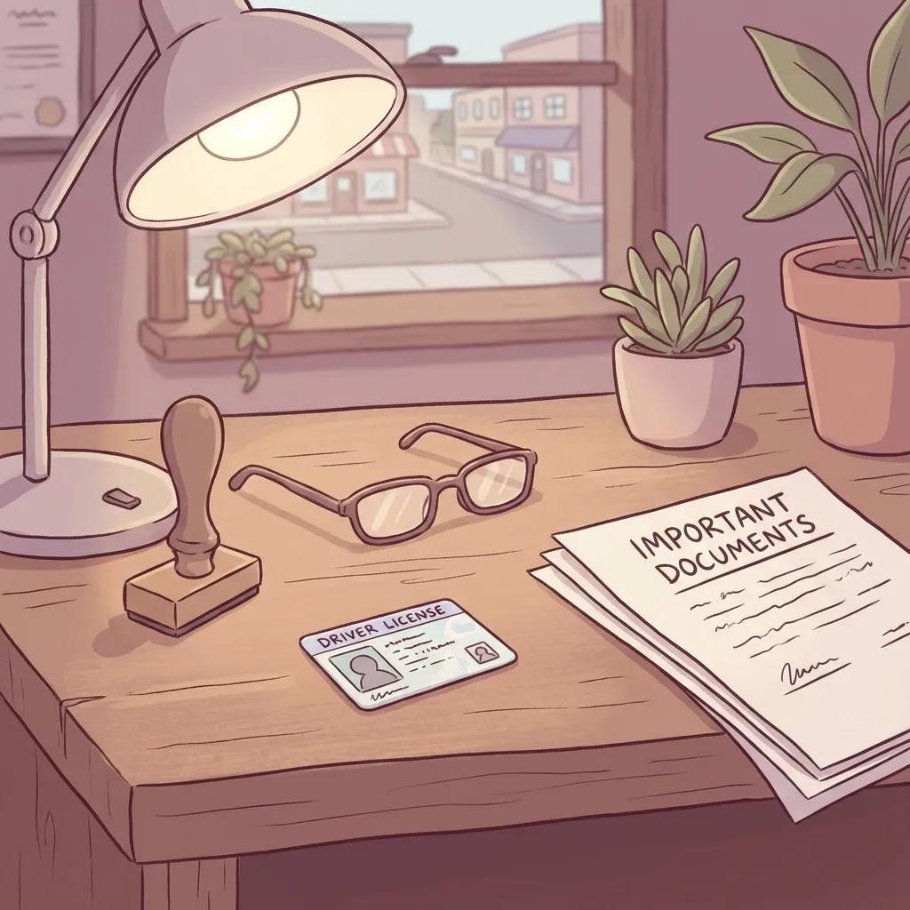

What You Need a Notary For (and Why It's Handy Having Your Attorney Certified)
If you live in North Vernon, Commiskey, Hayden, or anywhere else in Jennings County, you've probably heard someone mention needing to "get something notarized." Maybe it was your neighbor selling his farm, or your grandmother updating her will. But what exactly does a notary public do, and when do you actually need one?
As a small town lawyer who's also certified as a notary public, I see firsthand how confusing this can be for folks around here. Let me break it down in plain English and explain why having your attorney handle both jobs can make your life a lot easier.
What Does a Notary Public Actually Do?
Think of a notary public as an official witness with a special stamp. When you sign an important document, the notary's job is to:
Verify that you are who you say you are (by checking your ID)
Make sure you understand what you're signing
Confirm that you're signing willingly, not because someone is forcing you
Put their official seal on the document to make it legally recognized
That's it. A notary isn't there to give you legal advice or tell you whether the document is a good idea. They're just making sure everything is on the up and up when you put your name on the dotted line.

When You Actually Need a Notary in Rural Indiana
Buying or Selling Property. Whether you're purchasing your first home in Vernon or selling the family farm that's been in your name for decades, you'll need a notary. Real estate documents like deeds, mortgage paperwork, and closing documents all require notarization. Banks and title companies won't process these without proper notarization, so it's not optional.
Estate Planning Documents. This is where things get really important for families in Jennings County. Documents like wills, trusts, powers of attorney, and living wills need to be notarized to be legally valid. Without proper notarization, these documents might not hold up in probate court, which could cause serious problems for your family later.
For example, if your aging parent in Scipio wants to give you power of attorney to handle their finances, that document needs to be notarized. Same goes for healthcare directives that tell doctors what to do if your loved one can't speak for themselves.
Farm and Business Transactions. Small business owners and farmers around here deal with all kinds of contracts and agreements that need notarization. This might include equipment purchase agreements, loan documents for farm expansions, partnership agreements for family businesses, affidavits for insurance claims, and documents for selling livestock or crops.
Personal and Family Matters. You might need a notary for things like travel consent forms when one parent takes kids out of state, adoption papers, name change documents, sworn statements for court cases, and documents for elderly relatives who need help with their affairs.
Why Notarization Matters (Beyond Just Following Rules)
Fraud Prevention. The notary's main job is to prevent fraud. By checking IDs and making sure people understand what they're signing, notaries help stop situations where someone might forge a signature or trick an elderly person into signing something harmful.
This is especially important in small communities like ours, where people often know each other and might be more trusting than they should be with important documents.
Legal Protection. Notarized documents carry more weight in court. If someone later claims they didn't sign something or didn't understand what they were signing, a properly notarized document provides strong evidence that everything was done correctly.
Smoother Processing. Banks, government agencies, and courts process notarized documents faster and with fewer questions. This means less hassle and fewer delays when you're trying to close on a house, settle an estate, or handle other important matters.
The Big Advantage: Working With an Attorney Who's Also a Notary
Here's where things get really convenient for folks in North Vernon and the surrounding areas. When your attorney is also a certified notary public, you get several benefits that can save you time, money, and headaches.
One-Stop Service. Instead of meeting with me to draft or review a document, then driving somewhere else to find a notary, you can handle everything in one visit. This is especially helpful for busy farmers during planting or harvest season, or for elderly clients who don't get around as easily as they used to.
Better Understanding of What You're Signing. As an attorney who's also a notary, I can help you understand the legal implications of what you're signing before we notarize it. While notaries can't give legal advice, attorneys certainly can. This means you get both services from someone who understands your situation completely.
Immediate Problem-Solving. If we discover an issue with a document during the notarization process, we can often fix it right then and there. No need for multiple trips or delays while you figure out what went wrong.
Cost Savings. You'll save on travel time and potentially on fees. Instead of paying separate fees to an attorney and a notary, you're working with one professional who can handle both aspects of your legal needs.
Common Notary Mistakes to Avoid
Over the years, I've seen people make several mistakes when it comes to notarization:
Don't sign the document ahead of time. The notary needs to watch you sign it, so don't sign it at home and then bring it in.
Bring proper ID. A current driver's license or state ID card is usually what you need. Expired IDs won't work.
Make sure all signers are present. If multiple people need to sign, everyone needs to be there at the same time, or you'll need separate notarization appointments.
Don't leave blanks. Complete the entire document before getting it notarized, or the notary might not be able to proceed.
What This Means for Jennings County Families
For families around North Vernon, Vernon, Commiskey, Hayden, and Scipio, having access to attorneys in North Vernon Indiana who can also provide notary services makes handling legal matters much simpler. Whether you're dealing with estate planning, property transactions, or business needs, you don't have to coordinate between multiple professionals or make extra trips to town.
As a small town attorney North Vernon Indiana residents trust, I wear many hats to better serve our rural community. Being a certified notary public is just one more way to make legal services more accessible and convenient for the people I work with every day.
Getting Started
If you have documents that need notarization, or if you're not sure whether something needs to be notarized, don't hesitate to ask. Part of serving rural Indiana families means being available to answer questions and help you understand what you need, even if it seems like a small matter.
The combination of legal expertise and notary services means you can get comprehensive help with your legal needs without the hassle of coordinating multiple appointments or traveling to different locations. For busy families, farmers, and business owners in our area, this convenience can make a real difference in getting important matters handled properly and on time.
Remember, notarization isn't just about following rules: it's about protecting yourself, your family, and your interests. When you work with an attorney who's also a notary public, you get that protection along with the legal guidance you need to make informed decisions about important documents and transactions.